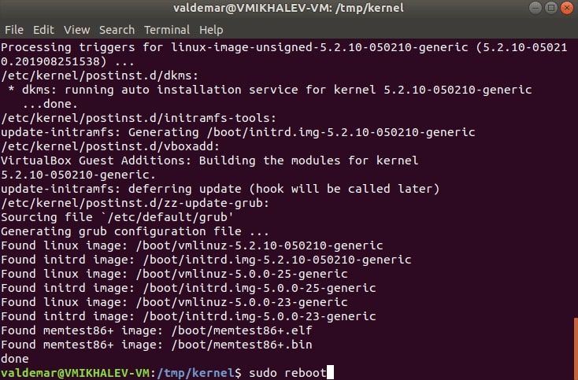

Обновление ядра на Ubuntu 28 августа 2019
Данная статья предназначена для тех, кто искал подробное и понятное руководство о том, как обновить ядро на Ubuntu.
Проверим текущую версию ядра. Открываем Terminal и выполняем команду:
uname -r
Создадим новый каталог, который понадобится для пакетов обновления ядра Ubuntu, с помощью команды:
mkdir /tmp/kernel
Переходим в новый каталог с помощью команды:
cd /tmp/kernel
Теперь переходим по ссылке и выбираем нужную версию, до которой вы хотите выполнить обновление ядра.
В данном руководстве рассматривается обновление ядра до версии 5.2.10.
Далее нужно скачать пакеты “generic” или “low latency”.
В данном руководстве рассматривается обновление ядра операционной системы, используемой для типовых задач.
Для операционной системы, используемой для типовых задач, понадобятся следующие пакеты:
Загрузим пакет, который содержит в названии “linux-headers” и “all”, и находится в разделе соответствующем архитектуре вашего процессора, с помощью команды:
wget https://kernel.ubuntu.com/~kernel-ppa/mainline/v5.2.10/linux-headers-5.2.10-050210_5.2.10-050210.201908251538_all.deb
Загрузим пакет, который содержит в названии “linux-headers” и “generic”, и находится в разделе соответствующем архитектуре вашего процессора, с помощью команды:
wget https://kernel.ubuntu.com/~kernel-ppa/mainline/v5.2.10/linux-headers-5.2.10-050210-generic_5.2.10-050210.201908251538_amd64.deb
Загрузим пакет, который содержит в названии “linux-image-unsigned” и “generic”, и находится в разделе соответствующем архитектуре вашего процессора, с помощью команды:
wget https://kernel.ubuntu.com/~kernel-ppa/mainline/v5.2.10/linux-image-unsigned-5.2.10-050210-generic_5.2.10-050210.201908251538_amd64.deb
Загрузим пакет, который содержит в названии “linux-modules” и “generic”, и находится в разделе соответствующем архитектуре вашего процессора, с помощью команды:
wget https://kernel.ubuntu.com/~kernel-ppa/mainline/v5.2.10/linux-modules-5.2.10-050210-generic_5.2.10-050210.201908251538_amd64.deb
Теперь необходимо установить все загруженные пакеты с помощью команды:
sudo dpkg -i *.deb
Указываем пароль от учетной записи и нажимаем “Enter”.
Перезагружаем операционную систему с помощью команды:
sudo reboot

Проверим версию ядра.
Открываем Terminal и выполняем команду:
uname -r

Вы должны увидеть новую версию ядра.